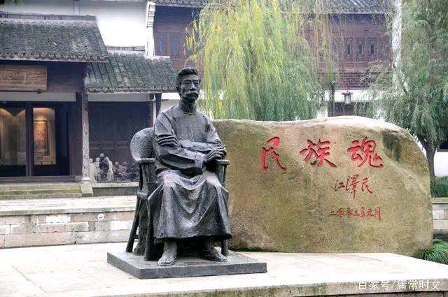
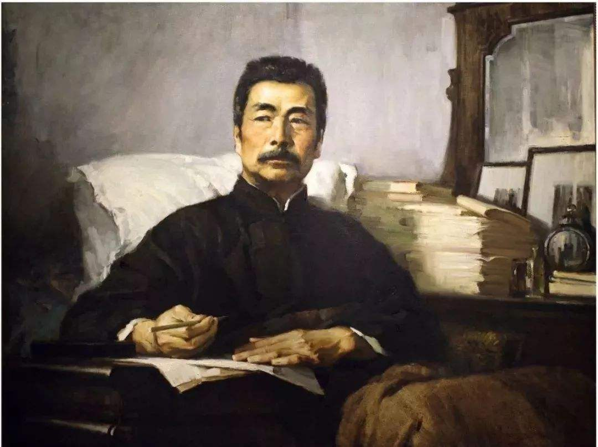

| 他人评价 |
没有伟大的人物出现的民族，是世界上最可怜的生物之群；虽有了伟大人物，而不知拥护、爱戴崇拜的国家，是没有希望的奴隶之邦。--郁达夫《怀鲁迅》 |
与其说鲁迅先生的精神不死，不如说他的精神正在发芽滋长，播撒到大众的心里。--叶圣陶 |
|  |
毛泽东推崇鲁迅，主要有三个方面：一是“他的政治的远见”，“他用显微镜和望远镜观察社会，所以看得远，看得真”；二是“他的斗争精神”，“他看清了政治方向，就向着一个目标奋勇地斗争下去，决不中途投降妥协”；三是“他的牺牲精神”，“他一点也不畏惧敌人对于他的威胁、利诱与残害，他一点不避锋芒地把钢刀一样的笔刺向他所憎恨的一切。”他还说：“鲁迅的骨头很硬，半殖民地的国家有像鲁迅这样硬的骨头是很可贵的。” |
|  |
横眉冷对千夫指，俯首甘为孺子牛。 |
| 时间就是生命，无端地空耗别人的时间，无异于谋财害命。 |
| 敌人是不足惧的，最可怕的是自己营垒里的蛀虫，许多事情都败在他们手里。 |
| 我每看运动会时，常常这样想：优胜者固然可敬，但那虽然落后而仍非跑至终点的竞技者，和见了这样的竞技者而肃然不笑的看客，乃正是中国将来之脊梁。 |
| 真的勇士敢于直面惨淡的人生，敢于正视淋漓的鲜血。 |
| 鲁迅名言 |
有缺点的战士终究是战士，宝贵的苍蝇也终究不过是苍蝇。 |